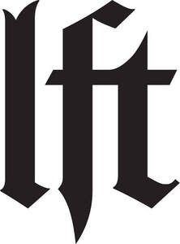

Trade Mark Journal No.2025/036 5 September 2025
UK00004241183 29 July 2025 (3,44)

- Class 3
- Creams (Cosmetic -); Cosmetic creams; Cosmetics and cosmetic preparations; Sunscreens [for cosmetic use]; Cosmetic moisturisers; Sunscreen [for cosmetic use]; Cosmetic soaps; Cosmetic facial lotions; Facial lotions [cosmetic]; Cosmetic soap; Lotions for cosmetic purposes; Cosmetic masks; Tonics [cosmetic]; Dyes (Cosmetic -); Cosmetic dyes; Facial creams [cosmetic]; Facial creams [for cosmetic use]; Cosmetic powder; Cosmetic preparations; Anti-aging creams [for cosmetic use]; Cosmetic pencils; Pencils (Cosmetic -); Facial cleansers [cosmetic]; Anti-ageing creams [for cosmetic use]; Kits (Cosmetic -); Cosmetic kits; Facial moisturisers [cosmetic]; Anti-wrinkle creams [for cosmetic use]; Cosmetic skin fresheners; Lacquer for cosmetic purposes; Skin creams [cosmetic]; Skin creams [for cosmetic use]; Cosmetic creams for the skin; Pro-collagen for cosmetic purposes; Facial cream [for cosmetic use]; Henna for cosmetic purposes; Skin balms [cosmetic]; Serums for cosmetic purposes; Skin cleansers [cosmetic]; Collagen for cosmetic purposes; Cosmetic skin enhancers; Cosmetic hair lotions; Cleansing creams [cosmetic]; Cosmetic rouges; Cosmetic tanning preparations; Facial scrubs [cosmetic]; Self-tanning preparations [cosmetic]; Facial toners [cosmetic]; Lip coatings [cosmetic]; After-sun lotions [for cosmetic use]; Pomades for cosmetic purposes; Suncare lotions [for cosmetic use]; Skin cream [for cosmetic use]; Skin whitening preparations [cosmetic]; Cosmetic creams and lotions; Anti-ageing serums for cosmetic purposes; Anti-wrinkle cream [for cosmetic use]; Toning creams [cosmetic]; Adhesives for cosmetic purposes; Cosmetic sun-protecting preparations; Astringents for cosmetic purposes; Acne cleansers, cosmetic; Cosmetic facial masks; Facial masks [cosmetic]; Glitter for cosmetic purposes; Sunscreen creams [for cosmetic use]; Cosmetic sunscreen preparations; Toners for cosmetic purposes; Facial washes [cosmetic]; Lip stains for cosmetic purposes; Cosmetic facial packs; Facial packs [cosmetic]; Geraniol for cosmetic purposes; Skin care lotions [cosmetic]; Cosmetic massage creams; Cosmetic suntan lotions; Cosmetic nail preparations; Cosmetic suntan preparations; Retinol cream for cosmetic purposes; Eyelashes (Cosmetic preparations for -); Cosmetic preparations for eyelashes; Cosmetic hand creams; Skin toners [cosmetic]; Skin hydrators for cosmetic purposes; Cosmetic products for the shower; Skin care creams [cosmetic]; Cosmetic creams for skin care; Procollagen for cosmetic purposes; Pencils for cosmetic purposes; Cosmetic eye gels; Gels for cosmetic purposes; Hair care creams [for cosmetic use]; Hair care lotions [for cosmetic use]; Exfoliating scrubs for cosmetic purposes; Cosmetic sun-tanning preparations; Hair tonics [for cosmetic use]; Tooth powders [for cosmetic use]; Cosmetic preparations for slimming purposes; Cosmetic nourishing creams; Skin care (Cosmetic preparations for -); Cosmetic preparations for skin care; Skin conditioning creams for cosmetic purposes; Ointments for cosmetic use; Self tanning creams [cosmetic]; Moisturising gels [cosmetic]; Suntan oils for cosmetic purposes; Moisturising skin lotions [cosmetic]; Cotton for cosmetic purposes; Moisturising concentrates [cosmetic]; Softening cleanser [cosmetic]; Cosmetic face powders; Face powders [for cosmetic use]; Self tanning lotions [cosmetic]; Cosmetics; Cosmetic eye pencils; Artificial nails for cosmetic purposes; Lint for cosmetic purposes; Essences for cosmetic purposes; Sun creams [for cosmetic use]; Removable tattoos for cosmetic purposes; Beauty care cosmetics; Beauty care preparations; Beauty creams for body care; Body cleaning and beauty care preparations; Distilled oils for beauty care; Body care cosmetics; Skin care cosmetics; Essences for skin care; Beauty serums; Beauty lotions; Hair care creams; Hair care serums; Sun care lotions [for cosmetic use]; Hair care lotions; Beauty creams; Skin care products for animals; Cosmetic hair care preparations; Skin care creams, other than for medical use; Hair care masks; Cosmetic preparations for body care; Cosmetic nail care preparations; Hair care serum; Exfoliants for the care of the skin; Soaps for body care; Facial care preparations; Sun care lotions; Skin care preparations; Hair care preparations; Beauty soap; Eye care products, non-medicated; Sets of cosmetic oral care products; Sun care preparations for cosmetic use; Beauty masks; Masks (Beauty -); Cosmetic products in the form of aerosols for skin care; Skin care mousse; Beauty milk; Hair care agents; Beauty preparations for the hair; Hair relaxers; Hair dye; Hair pomades; Hair texturizers; Hair conditioner; Hair mousse; Hair lighteners; Dyes for the hair; Hair dyes; Hair mascara; Hair bleaches; Hair bleach; Hair colourants; Hair serums; Hair lotion; Hair lotions; Hair moisturizers; Hair cosmetics; Hair rinses; Hair gel; Hair mousses; Hair color; Hair conditioners; Hair wax; Hair colouring; Hair sprays; Hair styling lotions; Hair moisturisers; Hair oils; Hair spray; Shampoos for human hair; Hair styling gel; Hair creams; Hair cream; Hair gels; Hair colorants; Hair emollients; Hair nourishers; Hair powder; Styling sprays for the hair; Hair chalks; Hair oil; Tints for the hair; Hair tonics; Hair styling waxes; Hair lacquer; Hair masks; Hair lacquers; Hair styling spray; Hair balsam; Hair balms; Hair balm; Hair styling gels; Styling gels for the hair; Hair tonic; Colouring lotions for the hair; Hair liquid; Styling paste for hair; Hair glaze; Non-medicated hair shampoos; Hair and body wash; Hair glazes; Hair rinses [for cosmetic use]; Cosmetic preparations for the hair and scalp; Hair liquids; Wax treatments for the hair; Anti-aging cream; Sunscreen cream; Skin cream; Facial cream; Lip cream; Cream soaps; Cuticle cream; Cold cream; Shower cream; Eye cream; Cleansing cream; Hand cream; Base cream; Camouflage cream; Nail cream; Aftershave moisturising cream; Mattifying gel cream; Body cream; Cream foundation; Day cream; Cream for whitening the skin; Whitening the skin (Cream for -); Night cream; Face cream (Non-medicated -); Body cream soap; Skin cleansing cream; Anti-wrinkle creams; Wrinkle resistant cream; Cream cleaners (Non-medicated -); Shaving creams; Hair removing cream; Body mask cream; Moisturizing creams; Non-medicated foot cream.
- Class 44
- Beauty care; Beauty care services; Hygienic and beauty care; Hygienic and beauty care services; Beauty care of feet; Human hygiene and beauty care; Hygienic and beauty care for humans; Beauty care services provided by a health spa; Beauty treatment; Beauty care for human beings; Consultancy in the field of body and beauty care; Hygienic and beauty care for human beings; Information relating to beauty care; Rental of equipment for human hygiene and beauty care; Consultation services relating to beauty care; Beauty treatment services; Skin care salons; Skin care salon services; Advisory services relating to beauty care; Beauty spa services; Services for the care of the skin; Cosmetic body care services; Beauty salon services; Salon services (Beauty -); Services for the care of the hair; Hair care services; Facial beauty treatment services; Beauty therapy services; Beauty treatment services especially for eyelashes; Home health care services; Nail care services; Cosmetic body care services provided by health spas; Medical care; Health care in the nature of health maintenance organizations; Beauty salons; Salons (Beauty -); Services for the care of the face; Services of a hair and beauty salon; Beauty consultation services; Beauty information services; Beauty therapy treatments; Hair styling; Hair perming services; Hair straightening services.
Join The Nail Order Ltd